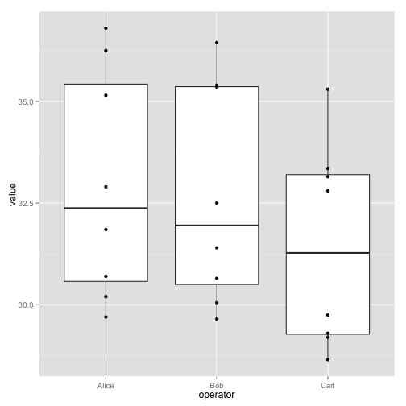

Programming with R
Welcome to R, let’s analyze some data
Welcome to R
Loading data
Our example data is quality measurements (particle size) on some PVC plastic production, using eight different resin batches, and three different machine operators.
read.csv(file="data/pvc.csv", row.names=1)dat <- read.csv(file="data/pvc.csv", row.names=1)dat Alice Bob Carl
Resin1 36.25 35.40 35.30
Resin2 35.15 35.35 33.35
Resin3 30.70 29.65 29.20
Resin4 29.70 30.05 28.65
Resin5 31.85 31.40 29.30
Resin6 30.20 30.65 29.75
Resin7 32.90 32.50 32.80
Resin8 36.80 36.45 33.15
class(dat)[1] "data.frame"
str(dat)'data.frame': 8 obs. of 3 variables:
$ Alice: num 36.2 35.1 30.7 29.7 31.9 ...
$ Bob : num 35.4 35.4 29.6 30.1 31.4 ...
$ Carl : num 35.3 33.4 29.2 28.6 29.3 ...
read.csv has loaded the data as a data frame, but actually it is a matrix. In a data frame the columns contain different types of data, but in a matrix all the elements are the same type of data. A data frame contains a collection of “things” (rows) each with a set of properties (columns) of different types. A matrix in R is like a mathematical matrix, containing all the same type of thing (usually numbers).
R often but not always lets these be used interchangably. Let us insist to R that what we have is a matrix.
mat <- as.matrix(dat)
class(mat)[1] "matrix"
Much better.
A t-test or two
mat[1,]Alice Bob Carl
36.25 35.40 35.30
mat[2,]Alice Bob Carl
35.15 35.35 33.35
t.test(mat[1,], mat[2,])
Welch Two Sample t-test
data: mat[1, ] and mat[2, ]
t = 1.4683, df = 2.855, p-value = 0.2427
alternative hypothesis: true difference in means is not equal to 0
95 percent confidence interval:
-1.271985 3.338652
sample estimates:
mean of x mean of y
35.65000 34.61667
Actually, this can be considered a paired sample t-test.
t.test(mat[1,], mat[2,], paired=TRUE)
Paired t-test
data: mat[1, ] and mat[2, ]
t = 1.8805, df = 2, p-value = 0.2008
alternative hypothesis: true difference in means is not equal to 0
95 percent confidence interval:
-1.330952 3.397618
sample estimates:
mean of the differences
1.033333
Challenge - using t.test
Can you find a significant difference between any two resins?
When we call t.test it returns an object that behaves like a list. Recall that in R a list is a miscellaneous collection of data.
result <- t.test(mat[1,], mat[2,], paired=TRUE)
names(result)[1] "statistic" "parameter" "p.value" "conf.int" "estimate"
[6] "null.value" "alternative" "method" "data.name"
result$p.value[1] 0.2007814
This means we can write software that uses the various results from t-test, for example performing a whole lot of t-tests and reporting the significant results.
A proper example of a data frame
Instead of storing this data in a matrix, we could store each measurement in a row of a data frame. We can convert to this “long” form with the melt function in the library reshape2.
library(reshape2)
long <- melt(mat)
head(long) Var1 Var2 value
1 Resin1 Alice 36.25
2 Resin2 Alice 35.15
3 Resin3 Alice 30.70
4 Resin4 Alice 29.70
5 Resin5 Alice 31.85
6 Resin6 Alice 30.20
colnames(long) <- c("resin","operator","value")
head(long) resin operator value
1 Resin1 Alice 36.25
2 Resin2 Alice 35.15
3 Resin3 Alice 30.70
4 Resin4 Alice 29.70
5 Resin5 Alice 31.85
6 Resin6 Alice 30.20
This long form is often the best form for exploration and statistical testing of data.
R has a built in plotting facility, with functions like plot.
A more recent and much more powerful plotting library is ggplot2. The syntax is a little strange, but there are plenty of examples in the online documentation.
If ggplot2 isn’t already installed, we need to install it.
install.packages("ggplot2")Loading required package: methods
A simple example:
ggplot(long, aes(x=operator, y=value)) + geom_point()
The call to ggplot sets up the basics of how we are going to represent the various columns of the data frame. We then literally add layers of graphics to this.
ggplot(long, aes(x=operator, y=value)) + geom_boxplot() + geom_point()
ggplot(long, aes(x=operator, y=value, group=resin, color=resin)) + geom_line()This long form is also ideal for statistical testing. Here is a one-way ANOVA.
oneway.test(value ~ resin, data=long)
One-way analysis of means (not assuming equal variances)
data: value and resin
F = 26.6047, num df = 7.000, denom df = 6.537, p-value = 0.0002445
A two-way ANOVA analysis would be better here. This is well beyond the scope of this course, but could be achived with something like:
anova(lm(value ~ resin + operator, data=long))Analysis of Variance Table
Response: value
Df Sum Sq Mean Sq F value Pr(>F)
resin 7 141.973 20.2818 39.615 3.599e-08 ***
operator 2 10.359 5.1795 10.117 0.001913 **
Residuals 14 7.168 0.5120
---
Signif. codes: 0 '***' 0.001 '**' 0.01 '*' 0.05 '.' 0.1 ' ' 1